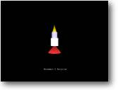

Movement &
|
 |
Lets start to get things moving, in this tutorial we will be loading an object which I made up in 3D Studio. Granted its not wonderful and looks more like a candle than a state-of-the-art rocket, but it will do us.
Let's take a look through the full source, feel free to run it and have a play !.
NOTE: You will need to have the object ROCKET.3DS in the same directory as the sourcecode for Blitz to find it
You can move the rocket forwards with the UP cursor, and rotate it with the LEFT and RIGHT cursor keys.
| Graphics3D 800,600 SetBuffer BackBuffer() camera=CreateCamera() CameraViewport camera,0,0,800,600 light=CreateLight() rocket=LoadMesh( "rocket.3ds" ) PositionEntity rocket,0,0,7 While Not KeyHit(1) If KeyDown(200) Then MoveEntity rocket,0,0.05,0 EndIf If KeyDown(203) Then TurnEntity rocket,0,0,1.0 EndIf If KeyDown(205) Then TurnEntity rocket,0,0,-1.0 EndIf UpdateWorld RenderWorld Text 320,500,"Movement & Rotation" Flip Wend End |
I won't explain every line of code, just the new commands which we have yet to use. First up is:
| rocket=LoadMesh("rocket.3ds") |
As you can probably guess, this line of code will load a 3d model called ROCKET.3DS into a handle variable called 'rocket'.
What's a handle variable ?, its exactly the same type of label we use in normal blitz for initializing sprites. (It holds the address in memory of where the data is stored), in this case the variable rocket points to the location of where the model is stored.
|
If KeyDown(200) Then MoveEntity rocket,0,0.05,0 EndIf |
These 3 lines tell us that if you are pressing the UP cursor move the object 'ROCKET' in the Y axis 0.05 units upwards.
Let's take a more indepth look at this, remember my rocket is pointing up - so to start with I want my rocket to travel upwards - hence why I am increasing the Y coordinate. (remember in 3D a positive Y means up - not down like in normal coordinate systems, such as plotting sprites in standard Blitz)
If my rocket was a car, that was designed to be facing towards the right - then I would want my car to travel to the right of the screen, (it goes forwards) - so I would be increasing the X coordinate. It's very important to get this right at the beginning of your program, or your shape could start moving in the wrong direction to what you want it to.
|
If KeyDown(203) Then
If KeyDown(205) Then |
It should be quite obvious to you that these lines control the rotation of our rocket. If you press the LEFT cursor - turn the rocket 1.0 unit clockwise, whereas pressing the RIGHT cursor results in turning -1.0 units anti clockwise.
So how comes the shape still moves forward even though we are no longer pointing up ? .. well.. you've got to thank Mr Sibly for giving us the very easy TurnEntity command !. You see as we turn the object, the axis move with it. If we rotate the shape 90 degrees, the Y axis is now pointing where the X axis should be. Don't worry why or how.. just be thankful you don't have to work out any nasty calculations to do it.
Just incase you where wondering, you can rotate the shape without the axis moving by using the RotateEntity command. This would be used mainly for placement of objects in your world - for example, if I designed the rocket on its side. I would firstly rotate it till its standing upright with the Rotate command - then I could use the turn command to move it.
And that's about it really.. The only way of getting to know this command, (which will probably be your most widely used command) - is to experiment. Try getting the rocket to rotate in other directions !!
remember here's the format you use:
|
TurnEntity [what object it is], X [amount to rotate about the X axis], Y [amount to rotate about the Y axis], Z [amount to rotate about the Z axis] |
NOTE: Blitz3D also contains a command for scaling an object, (see the doc's for info on SCALEENTITY) - if for instance we designed it too small we could increase it on-the-fly, or shrink it if its too large. If you choose to use a multitude of different 3d Packages to design your objects with, then you will need to use this command quite a lot. 3D Studio for instance, likes to scale your object much larger than other packages.